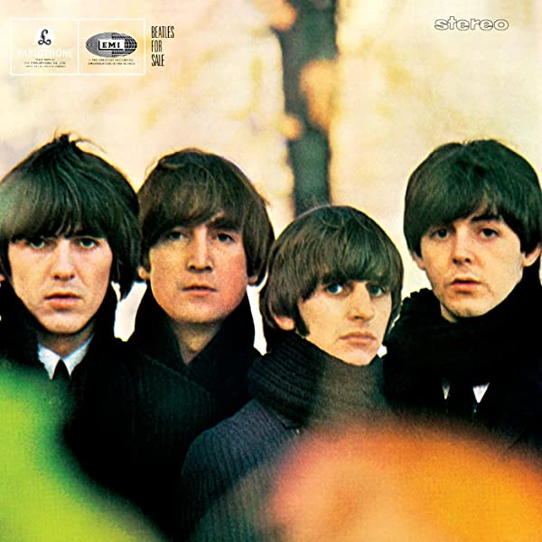
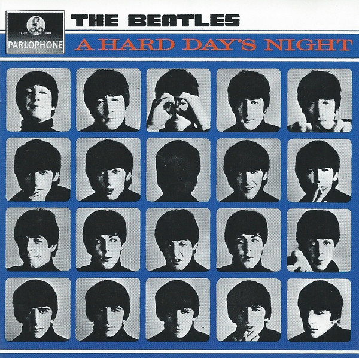

The Beatles es un grupo originario de la ciudad de Liverpool, en Inglaterra. Son ampliamente conocidos como el mejor grupo
de música popular de toda la historia, a pesar de que sólo estuvieron activos durante 10 años, en la década de los 60. Es
considerado el grupo más influyente de la historia moderna, reconocido así por numerosos artistas, productores o ingenieros
de sonido, entre otros.
The Beatles es un grupo originario de la ciudad de Liverpool, en Inglaterra. Son ampliamente conocidos como el mejor grupo
de música popular de toda la historia, a pesar de que sólo estuvieron activos durante 10 años, en la década de los 60. Es
considerado el grupo más influyente de la historia moderna, reconocido así por numerosos artistas, productores o ingenieros
de sonido, entre otros.
The Beatles
Fueron un auténtico icono y referencia de los jóvenes en la década de los 60, generalmente comparados con movimientos como el hippie o el mayo del 68. Los Beatles simbolizaban un intento de ruptura con la cultura tradicional, con las ataduras y reglas establecidas que imperaban hasta aquel entonces. Su aspecto, reflejado sobre todo en el pelo, hizo que la parte más conservadora de la sociedad los considerara "nocivos" de alguna manera. Alcanzaron una fama mundial sin precedentes, como el propio John Lennon dijo en una ocasión, granjeándose numerosos enemigos.
Somos más populares que Jesús.
The Beatles estaba formado por John Lennon, Paul McCartney, George Harrison y Ringo Starr. Al igual que en movimientos como la generación del 27, con Lorca o Alberti, o la Generación del 70 en el cine estadounidense, también conocida como "El Club de los Barbudos", formada por miembros como Francis Ford Coppola o George Lucas, The Beatles fue una de esas casualidades que, a priori, parecerían imposibles. Los 4 eran genios en su terreno, aunque el binomio Lennon/McCartney probablemente sea el más prolífico en lo que a composición se refiere.
Siempre se habla de Paul McCartney y John Lennon, y habitualmente se presta poca atención a los otros dos miembros. Ringo Starr era un grandísimo batería para su época, y es el responsable de dar a canciones como A Day in the Life o Get Back un sello y personalidad únicas. George Harrison quizás merecería un libro entero para él solo. Comunmente apodado The Quiet Beatle, es el compositor de canciones memorables como Something, While My Guitar Gently Weeps, Here Comes the Sun o Taxman. De hecho, Elvis Presley confesó que hacía sus pruebas de sonido con Something. George era un verdadero genio, como prueba su carrera en solitario post-beatles.
Discos principales

Beatles For Sale

With The Beatles

A Hard Day's Night

Help!

Rubber Soul

Revolver
Sgt Peppers
Magical Mystery Tour

White Album
Yellow Submarine

Abbey Road
Let It Be
Tabla de Discos
| Título | Año de lanzamiento | Canciones destacadas | Anécdotas | Discográfica | Portada |
|---|---|---|---|---|---|
| Beatles For Sale | 1964 | Eight Days A Week, Rock and Roll Music | La canción Rock and Roll Music fue originalmente escrita por Chuck Berry, a quien John Lennon admiraba mucho, motivo por el cual decidieron versionarla e incluirla. | Parlophone | |
| With The Beatles | 1963 | All My Loving, Till There Was You | With The Beatles fue el primer álbum en el que los cuatro miembros del grupo cantaron. | Parlophone | |
| A Hard Day's Night | 1964 | A Hard Day's Night, And I Love Her, Can't Buy Me Love | El acorde inicial de A Hard Day's Night ha sido motivo de muchas discusiones, debido a su peculiar e innovador sonido para la época. | Parlophone | |
| Help! | 1965 | Help, Yesterday, Ticket To Ride | Paul McCartney soñó con la melodía de Yesterday, una de las canciones más emblemáticas del grupo. Nada más despertarse, se sentó al piano para poner acordes a la melodía que había soñado. | Parlophone | |
| Rubber Soul | 1965 | Drive My Car, Michelle, Nowhere Man | Fue el álbum en el que los Beatles empezaron a introducir novedosas técnicas de grabación, como el uso de un 8 pistas. | Parlophone | |
| Revolver | 1966 | Taxman, Eleanor Rigby, For No One | El solo de la canción Tomorrow Never Knows suena en reverso ya que decidieron invertir la cinta durante la grabación. | Parlophone/EMI | |
| Sgt. Peppers | 1967 | A Day In The Life, Lucy in the Sky with Diamonds | Paul McCartney tuvo la idea del título cuando, yendo en avión, le dijeron mientras comían "pass the salt and pepper". Pensó que sonó como "Sergeant Pepper", y así surgió la idea. | Parlophone/Capitol | |
| Magical Mystery Tour | 1967 | I Am The Walrus, Penny Lane | John Lennon escribió la letra de I Am The Walrus para que no tuviera ningún sentido, tratando de volver locos a todos aquellos "expertos" que trataban de analizar sus canciones. | Parlophone/Capitol | |
| The White Album | 1968 | Blackbird, While My Guitar Gently Weeps, Revolution | El solo de la canción While My Guitar Gently Weeps, compuesta por George Harrison, fue grabado por Eric Clapton, íntimo amigo de George. | Apple Records | |
| Yellow Submarine | 1969 | Hey Bulldog, All You Need Is Love | La cara B del álbum es una suite orquestal compuesta enteramente por George Martin, productor de los Beatles. | Apple Records | |
| Abbey Road | 1969 | Something, Here Comes The Sun, Because | En los vinilos, el tema Her Majesty, último de todo el disco, estaba oculto: no aparecía en la lista de canciones ni apuntado en el vinilo. | Apple Records | |
| Let It Be | 1970 | Let It Be, Get Back, I've Got a Feeling | Gran parte del disco fue grabado en directo, en una actuación llevada a cabo en la terraza de Apple Records. | Apple Records |